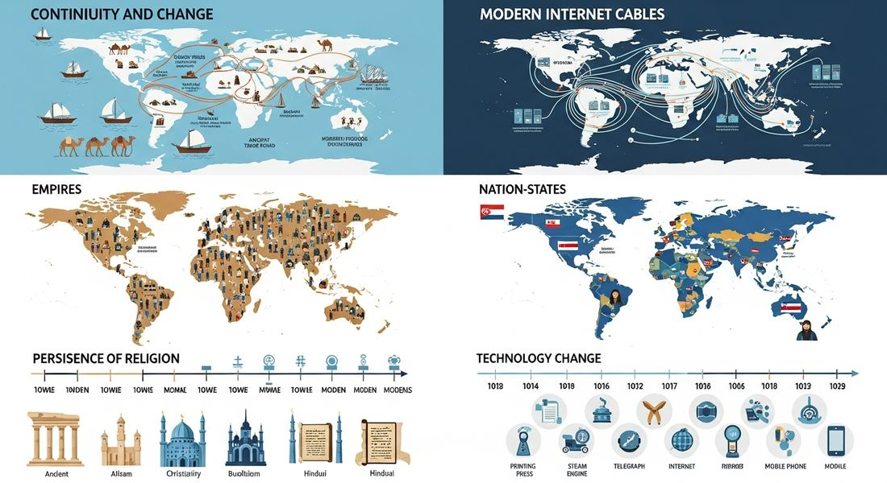

9.9 Continuity and Change in a Globalized World
- LO-A: Science and technology brought dramatic change: The period 1900 to the present witnessed the most rapid technological change in human history: communication, transportation, energy, agriculture, medicine, and computing all transformed beyond recognition. Human life expectancy doubled. Population grew from 1.6 to 8+ billion. Global trade multiplied. These represent genuine, profound historical transformations. But significant continuities persisted: Despite technological revolutions, core patterns persisted: inequality between wealthy and poor nations continued; gender hierarchies adapted rather than disappeared; states continued competing for power; environmental exploitation continued at ever larger scales; new diseases emerged to replace conquered ones. Change and continuity coexisted. Technology's impacts were uneven: The same technologies that raised living standards in wealthy nations often reinforced inequalities globally. The internet connected billions but left others behind. The Green Revolution fed some while deepening poverty for others. Understanding globalization requires seeing both its achievements and its failures simultaneously. Topic 9.9 is about argumentation: The CED skill for this topic is Argumentation, building complex, qualified arguments using evidence. "To what extent" questions require you to acknowledge complexity: technology brought enormous change AND significant continuities persisted. Neither simple celebration nor simple condemnation captures the full picture.
Try each question before revealing the answer.
1. What is the difference between "change" and "continuity" in AP World History, and why does identifying both matter?
2. What is a "complex argument" on the AP exam and how do you build one?
3. Looking across all of AP World History Modern, what are the most important continuities from 1200 to the present?
- Explain the extent to which science and technology brought change in the period from 1900 to the present, synthesizing all of Unit 9's key concepts and practicing the AP skill of Argumentation
Tap a term for its definition.
-
Definition: The view that technology is the primary driver of historical change, that technologies shape societies rather than societies shaping technologies. Significance: A perspective to consider and critique; the AP exam rewards recognizing that political, economic, and social factors also shape how technology develops and who benefits from it.
-
Definition: Outcomes of actions or policies that were not intended or anticipated by the actors involved. Significance: A key theme of Unit 9: antibiotics created resistant bacteria; fossil fuels created climate change; birth control contributed to demographic aging; the internet enabled both democratization and authoritarian surveillance.
-
Definition: The unequal distribution of wealth, health, power, and opportunities between different nations and regions of the world. Significance: A major continuity across AP World History Modern: from Silk Road wealth concentrations to European imperial extraction to modern development gaps, inequality has been a persistent structural feature of the global order despite technological progress.
-
Definition: An economic ideology (dominant from the 1980s onward) promoting free markets, privatization, reduced government regulation, and open global trade as the path to development; implemented through IMF and World Bank structural adjustment programs. Significance: The CED requires analysis of economic globalization's causes and effects; neoliberalism is the policy framework that reshaped the global economy after the Cold War, producing growth for some and inequality for others.
-
Definition: The transformation of economies, societies, and communications through computerization, the internet, and mobile technology, accelerating dramatically from the 1990s onward and enabling instantaneous global communication and commerce. Significance: The CED identifies technological change as a key driver of late-20th-century globalization; the digital revolution compressed time and space, making the global economy, cultural exchange, and political organizing fundamentally different from all previous eras.
-
Definition: An organization to which member nations transfer some sovereign authority, allowing the organization to make binding decisions across borders; examples include the UN, WTO, EU, IMF, and World Bank. Significance: The CED's Unit 9 addresses global institutions; supranational organizations represent a new form of governance created to manage interdependence, a major change from the nation-state system that dominated the 19th and early 20th centuries.
🔄 The Argumentation Skill: Building Complex Historical Claims
Topic 9.9 is the final topic in the final unit of AP World History Modern, and like all of the "continuity and change" capstone topics (1.7, 2.7, 4.8, 5.10, 8.9), it is an opportunity to practice the highest-level AP historical thinking skill: Argumentation. The CED's suggested skill for this topic is to "corroborate, qualify, or modify an argument using diverse and alternative evidence in order to develop a complex argument."
What does a complex argument look like? The CED gives four specific forms:
- Explain nuance by analyzing multiple variables, rather than "technology changed everything," examine HOW different technologies changed different groups differently
- Explain relevant and insightful connections within and across periods, connect Unit 9's globalization to Unit 5's industrialization; connect 20th-century disease patterns to Unit 2's Black Death
- Explain the relative historical significance of a source's credibility and limitations, a World Bank economist and a Mexican farmer will give very different accounts of NAFTA; both perspectives have value and limitations
- Explain how or why a historical claim or argument is or is not effective, assess whether "technology was the primary driver of 20th-century change" is a useful argument, and if so, where it breaks down
Topic 9.9 gives you the chance to practice all of these skills by synthesizing the entire unit's content into sophisticated historical arguments.

AI-generated illustration (Google Gemini, 2025), commercially licensed.
📊 What Changed: Science and Technology's Transformative Impact (KC-6.1)
Across Unit 9, you've studied the multiple ways science and technology transformed human life in the period 1900 to the present. Taken together, this constitutes one of the most dramatic periods of transformation in human history:
Communication and Transportation (KC-6.1.I.A): The period began with telegraph and early telephone; it ended with a globally connected internet carrying nearly 5 billion users. Radio connected continents in the 1920s; cellular phones reached more people than clean water by the 2010s. Air travel and shipping containers compressed geographic distance to near-irrelevance for goods and people. The transformation in communication was qualitative, not just quantitative. It changed what was possible in commerce, politics, science, and culture.
Medicine (KC-6.1.I.C): Life expectancy roughly doubled globally, from ~31 years in 1900 to ~73 years by 2020. Smallpox, which had killed hundreds of millions throughout history, was eradicated by 1980. Antibiotics conquered bacterial infections that had killed throughout human history. The transformation in human health was genuinely extraordinary by any historical standard.
Agriculture (KC-6.1.I.B): The Green Revolution multiplied crop yields and sustained a population that grew from 1.6 billion to 8 billion. Genetically modified organisms extended agricultural capabilities further. The fear of mass famine as a global catastrophe, still real in the 1960s, was substantially averted through agricultural science.
Social and Economic Organization (KC-6.3.I, KC-6.3.III, KC-6.3.IV): Global trade integration, women's suffrage worldwide, civil rights advances, and consumer culture globalization transformed social and economic life. Free-market policies spread globally. The internet created knowledge economies. These transformations touched virtually every aspect of how humans organized collective life.
⚖️ What Continued: Persistent Patterns (KC-6.1, KC-6.3)
A sophisticated historical argument about this period must also identify what didn't change, the continuities that persisted beneath and alongside technological transformation.
Global Inequality Persisted: Despite unprecedented economic growth and technological progress, the gap between wealthy and poor nations remained enormous and, in some respects, widened. Sub-Saharan Africa, much of South Asia, and parts of Latin America remained far poorer than North America, Western Europe, Japan, and Australia. Diseases of poverty (malaria, tuberculosis) continued killing millions in poor nations while being controlled in wealthy ones. The environmental costs of development fell disproportionately on the poor. The pattern of global inequality, a core feature of the world since at least the Industrial Revolution, proved remarkably resistant to technological progress alone.
Gender Inequality Persisted: Despite women's suffrage expanding globally and increasing educational and professional access, gender gaps in pay, political representation, violence, and social status persisted worldwide. The forms of gender inequality changed, formal legal exclusion gave way to structural and economic disadvantage, but the underlying pattern of male privilege over female opportunity showed remarkable continuity even as its specific manifestations transformed.
State Competition Continued: The United Nations, NATO, trade agreements, and other international institutions created new frameworks for cooperation, but states continued competing for power, influence, territory, and resources. Two world wars, the Cold War, and numerous regional conflicts demonstrated that international integration had not overcome the fundamental dynamics of interstate competition. Nationalist politics reasserted themselves against internationalism repeatedly throughout the period.
Environmental Exploitation Deepened: The Industrial Revolution had begun the large-scale exploitation of natural resources and pollution of the environment. Rather than reversing this trajectory, the 20th century accelerated it. Deforestation, freshwater depletion, biodiversity loss, and greenhouse gas accumulation all intensified despite growing environmental awareness and movement. The continuity is in the structural relationship between economic growth and environmental degradation, a pattern stretching from industrialization through globalization.
🔗 Synthesis: Connecting the Periods
Topic 9.9 invites you to synthesize not just Unit 9 but AP World History Modern as a whole. Several major themes connect this final unit to earlier periods:
From Silk Roads to the Internet: The human drive to exchange goods, information, and ideas across distance is a continuity from Unit 2's trade networks to Unit 9's digital globalization. The technologies change, camel caravans to shipping containers, silk to microchips, but the fundamental human impulse and its transformative consequences connect across 800 years of AP World History.
From Gunpowder to Nuclear Weapons: Technology's dual nature, enabling both enormous productivity and horrific destruction, runs from the gunpowder empires of Unit 3 through industrial-scale WWI slaughter (Unit 7) to nuclear deterrence (Unit 8) and the climate crisis (Unit 9). Each technological era brings new powers of creation and destruction simultaneously.
From Columbian Exchange to Global Public Health: The spread of disease along trade networks, killing millions in the Columbian Exchange (Unit 4) and the Black Death (Unit 2), connects directly to 20th-century pandemic dynamics (Unit 9's 1918 flu, HIV/AIDS). The same global connectedness that drives economic exchange enables disease transmission, a continuity across centuries.
From European Imperialism to Economic Globalization: The extraction of resources from colonized regions by wealthy European powers (Unit 6) transformed in the 20th century into the economic relationships of globalization, developing nations exporting raw materials and manufacturing labor while wealthy nations retained higher-value activities. The specific mechanisms changed; the underlying pattern of economic relationship between wealthy and poor regions showed significant continuity.
These videos will help you review Continuity and Change in a Globalized World and solidify key concepts before your exam.
- Technology advanced rapidly in both the 20th and 21st centuries.
- Technology changed communication more than it changed agriculture.
- While technology raised overall living standards globally, the benefits were unevenly distributed, with wealthy nations gaining disproportionately and diseases of poverty persisting among the world's poor despite existing treatments.
- Some technologies, like nuclear weapons, were harmful rather than beneficial.
- The dominance of steam-powered transportation in global commerce
- The absence of major interstate conflict after the creation of the United Nations in 1945
- The exclusive control of nuclear weapons by the United States throughout the period
- The persistence of significant economic inequality between wealthy industrialized nations and developing nations despite rapid overall economic growth
- Developing a qualified claim about the extent of change brought by technology, supported by multiple types of evidence and acknowledging counter-examples
- Describing the causes of the Green Revolution without evaluating its effects
- Listing all the technologies developed in the 20th century
- Identifying the precise date of a single technological invention
- The development of nuclear power plants to generate electricity
- The overuse of antibiotics creating antibiotic-resistant bacteria strains, threatening the very medical advances antibiotics represented
- The invention of the internet to facilitate global communication
- The creation of the United Nations to maintain international peace
- The Mongol Empire's trade networks (c. 1200–1450), because they established the first global trade routes
- The Renaissance (c. 1200–1450), because it produced the intellectual foundations of modern science
- The Columbian Exchange (c. 1450–1750), because it first connected the Americas to global trade networks
- The Industrial Revolution and European Imperialism (c. 1750–1900), because industrialization created the wealth gap and economic relationships that 20th-century globalization built upon